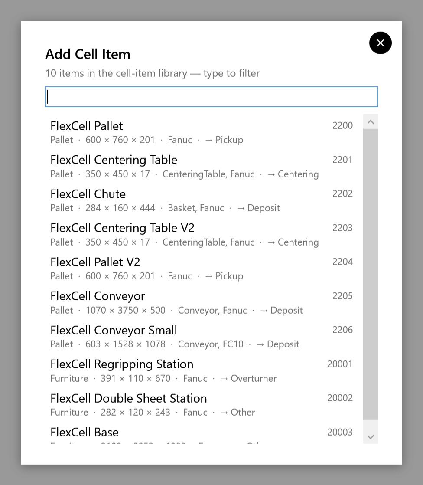
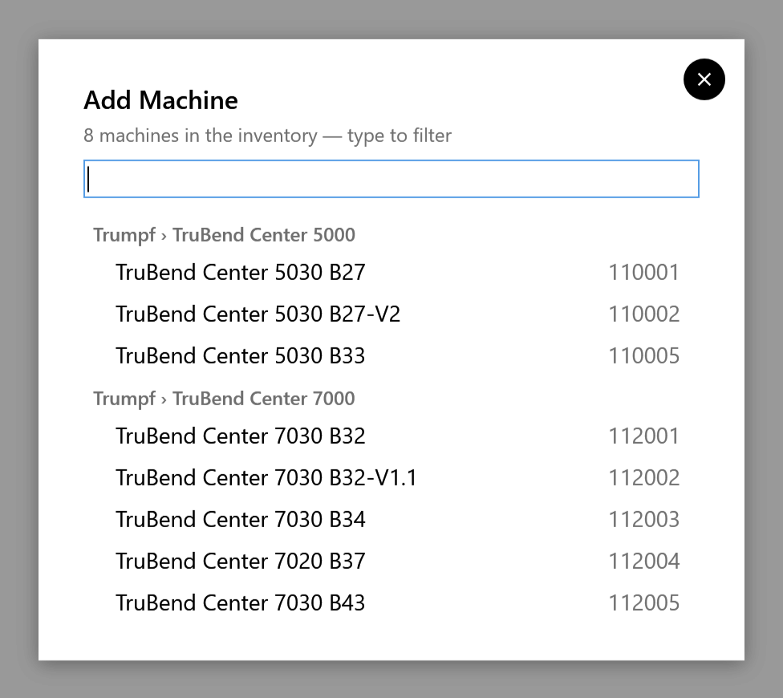

Adding stations
add on the rail opens a menu:
| Entry | What it adds |
|---|---|
Setup from File |
Opens a solution, cell config or drawing (the same as File ▸ Open…) |
Cell Item (Library) |
A pallet, table, conveyor or other item from the cell-item library |
Machine (Library) |
A TruBend Center panel bender from the machine library |
Cell Component (File) |
Your own fixture, from a STEP, STL or OBJ file |
2D Sheet (DXF / GEO) |
The part: Importing the part |
add is on the rail for a new cell and once a solution exists. At other times:
-
Your own fixtures can be added with File ▸ Import ▸ Cell Component or settings ▸ Frames ▸ Import Cell Element….
-
Library items and machines can’t be added then.
A new element starts with its frame at zero (a pallet’s .ini sets its height). Place it in the Frames panel: see Frames and roles.
From the cell-item library
add ▸ Cell Item (Library) lists the library. Type in the box to filter it; Enter takes the first match. Each row shows the item’s name and number, then its kind, its size in mm, its flags and, after the arrow, the role it gets.

| Item | Role it gets |
|---|---|
FlexCell Pallet, FlexCell Pallet V2 |
Pickup |
FlexCell Centering Table, FlexCell Centering Table V2 |
Centering Table |
FlexCell Chute, FlexCell Conveyor, FlexCell Conveyor Small |
Deposit |
FlexCell Regripping Station |
Overturner |
FlexCell Double Sheet Station, FlexCell Base |
Other |
After you pick one:
-
a toast confirms it, for example Added FlexCell Centering Table as Centering;
-
the Frames panel opens on the new item, ready for its frame.
From the machine library
add ▸ Machine (Library) lists the machines, grouped by series. Type to filter.

The library holds these TruBend Center models: 5030 B27, 5030 B27-V2, 5030 B33, 7020 B37, 7030 B32, 7030 B32-V1.1, 7030 B34 and 7030 B43.
-
Where a machine sits: its frame is on its bend line. Set it in the Frames panel.
-
A machine with a bed becomes the loading machine, whatever its role. The robot then loads the part onto the bed, waits while it is bent, and unloads it.
-
Where the part goes on the bed: set it with On machine bed in the Frames panel; see Frames and roles.
Your own components
add ▸ Cell Component (File) imports a fixture from a STEP (.step, .stp), STL or OBJ file.
-
Plain fixture: it comes in with the role Other. Open settings ▸ Frames to set its role and frame. Giving it the role Pickup does not make it a pickup: only a pallet can be one.
-
Pallet: put a small .ini file next to the mesh, containing Type=Pallet and the pallet height Z. FRobot takes the .ini with the mesh’s name, otherwise any .ini in the folder. The component then comes in as a pickup pallet:
-
its role is Pickup;
-
its frame origin is 50 mm in from its corner on the top face, at the height Z;
-
the Frames panel opens on it.
-
The Samples\SampleCellComponents folder has a pickup pallet and a centering table to try this with.
|
Note
|
The sample centering table’s .ini also says Type=Pallet, so it comes in as a Pickup pallet. Change its role to Centering Table in the Frames panel. |
Removing an element
Select it in the Frames panel’s Cell Element list, or click it in the 3D view, and click Remove.